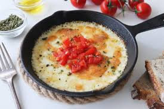

Entradas

Provoleta con orégano

Empanadas criollas

Mollejas crocantes
Bonus track
¡Receta de mollejas crocantes!
Ingredientes
- 500 g de mollejas (de corazón o cuello, preferiblemente de ternera o cordero)
- Jugo de 1 limón
- Sal gruesa y pimienta al gusto
- 2 dientes de ajo y laurel (opcional)
- Harina de trigo (cantidad necesaria para rebozar)
- 2 huevos (para rebozar)
- Pan rallado (opcional, si las quieres extra crocantes)
Pasos a seguir
- Limpiar bien las mollejas
- Hervirlas durante 10 minutos para tiernizar
- Cortarlas en trozos pequeños y salpimentar a gusto
- Freír sobre aceite bien caliente
- ¡Listo para disfrutar!